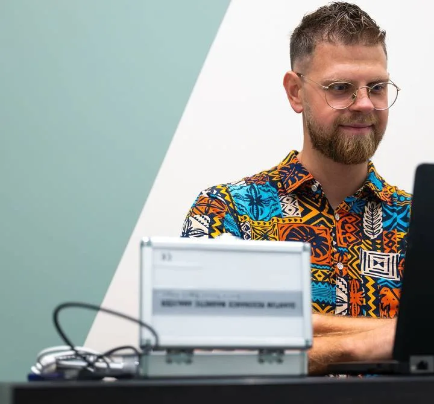

Gabinet w studiu ART · Borkowo
Sesja Analizy i Strategii Zdrowia + Biorezonans
Dowiedz się, skąd biorą się Twoje dolegliwości, i wyjdź z gabinetu z konkretnym planem działania. Bez igieł i bez czekania na wyniki.
- 10 latw obszarze zdrowia
- 1300+wykonanych skanów
- 60 minskan i rozmowa
- Bezbolesne badanie
- Wynik od razu na ekranie
- Plan na e-mail
- Ponad 40 parametrów
Czy to o Tobie?
Czujesz, że coś jest nie tak, a nikt nie potrafi powiedzieć co?
- Brakuje Ci energii, choć śpisz i starasz się dbać o siebie.
- Wyniki badań są „w normie”, a Ty wcale nie czujesz się dobrze.
- Wzdęcia, ciężkość po jedzeniu i kłopoty z trawieniem to Twoja codzienność.
- Kupujesz suplementy na wyczucie i nie wiesz, które są Ci potrzebne.
- Gubisz się w sprzecznych poradach o diecie i zdrowiu.
- Trenujesz i jesz rozsądnie, a samopoczucie stoi w miejscu.
Jeśli choć jeden punkt brzmi znajomo, ta sesja jest dla Ciebie. Szukamy przyczyny.
 −35 kgmoja własna droga zmiany
−35 kgmoja własna droga zmiany
Kto Cię przyjmie
Mateusz Stuka
naturoterapeuta
Pracuję z ludźmi, nie z pojedynczymi wynikami. Jednym skanem biorezonansem sprawdzam ponad 40 parametrów organizmu, a wynik łączę z rozmową o Twoim stylu życia, historii zdrowia i dolegliwościach, żeby dotrzeć do przyczyny.
Sam przeszedłem drogę zmiany i schudłem 35 kilogramów, więc wiem, jak ważne są małe, konkretne kroki. Dlatego wychodzisz ode mnie z planem, który da się wprowadzić w codzienne życie.
- ŚUM
- absolwent Śląskiego Uniwersytetu Medycznego
- Akademia Naturopatii
- i 5 lat praktyki w naturopatii
- Publikacja naukowa
- współautor pracy o zdrowiu kobiet (2023)
Co zyskujesz
Jedna wizyta, a wychodzisz z odpowiedziami
Szeroki obraz w godzinę
Witaminy, minerały, jelita, wątroba, hormony i wiele więcej sprawdzone podczas jednej wizyty, zamiast kilku osobnych badań.
Wynik i rozmowa od razu
Raport widzisz na ekranie jeszcze w trakcie sesji i od razu go razem omawiamy. Kolejny termin nie jest potrzebny.
Plan na piśmie
Wiesz, skąd biorą się Twoje objawy i od czego zacząć. Podsumowanie z zaleceniami dostajesz na e-mail.
Krok po kroku
Jak wygląda sesja?
Nie musisz się przygotowywać. Jeśli masz wyniki wcześniejszych badań, weź je ze sobą.
- 1
Bezbolesny skan
Trzymasz w dłoni elektrodę podłączoną do analizatora. Bez nakłuwania i bez bólu. W kilka minut powstaje raport z ponad 40 parametrów organizmu.
- 2
Rozmowa o wynikach
Łączymy wynik skanu z Twoją historią zdrowia i stylem życia. Szukam zależności między układami, żeby dotrzeć do przyczyny, a nie tylko złagodzić objaw.
- 3
Plan dalszych kroków
Ustalamy, od czego zacząć zmiany. Po sesji na Twój e-mail trafia pisemne podsumowanie z zaleceniami, do którego wracasz w domu.
Co sprawdza skan
Ponad 40 parametrów podczas jednego badania
Porównaj: kilka popularnych badań z krwi zrobionych osobno i jedna sesja w gabinecie ART.
Badania z krwi osobno
6 parametrów
345 zł bez omówienia wyników
- Żelazo, magnez, potas 45 zł
- Cynk 40 zł
- Witamina B12 40 zł
- Kwas foliowy (B9) 40 zł
- Witamina D 70 zł
- Selen 110 zł
Każde badanie osobno, wyniki czytasz sam lub sama.
Sesja w gabinecie ART
40+ parametrów w kilkunastu obszarach
450 zł z godziną rozmowy i planem na e-mail
- Witaminy i minerały
- Koenzymy
- Jelita i trawienie
- Wątroba
- Nerki
- Trzustka
- Układ krążenia
- Układ kostny
- Gospodarka hormonalna
- Obszar ginekologiczny
- Toksyny
- Metale ciężkie
- Wynik od razu na ekranie
- 60 minut rozmowy o Twojej sytuacji
- Pisemny plan działania na e-mail
Orientacyjne ceny w polskich laboratoriach. Porównanie pokazuje różnicę w zakresie i wygodzie, a nie w dokładności metod. Skan obejmuje też inne obszary, zależnie od Twojej sytuacji.
Cennik
Wybierz formę, która Ci pasuje
Sesja w gabinecie ART
Przychodzisz do studia w Borkowie.
450 zł klubowicze ART: 400 zł
- Skan biorezonansem i omówienie wyników
- Rozmowa o Twojej sytuacji i dalszych krokach
- Pisemne zalecenia na e-mail
60 minut
Przyjadę do Ciebie
Do jednej osoby albo do kilku, np. całej rodziny.
450 zł za osobę + dojazd
- Ta sama sesja ze skanem, u Ciebie
- Koszt dojazdu ustalany indywidualnie
- Przy kilku osobach dojazd dzielicie
60 minut za osobę
Sesja online
Gdy nie możesz dojechać. Bez badania biorezonansem.
297 zł
- Analiza wywiadu i Twoich badań
- Kierunek dalszych działań
- Raport na e-mail
60 minut
Chcesz działać dalej pod moją opieką? W 90-dniowym Programie Odbudowy Zdrowia pierwsze spotkanie wdrożeniowe kosztuje Cię o 60% mniej, bo analizę masz już za sobą.
Opinie z Google
Co mówią klienci po sesji?
5/5 ocena każdej z tych opinii
Już od pierwszego kontaktu czuć było profesjonalne podejście, a sama wizyta przebiegła w spokojnej i komfortowej atmosferze. Wyniki szczegółowo omówione w sposób zrozumiały i rzeczowy. Zauważyłam poprawę samopoczucia i większą świadomość swojego organizmu.
Świeżo po badaniu, pełen profesjonalizm w tej dziedzinie. Pan Mateusz bardzo rzetelnie podszedł do badania, na którym precyzyjnie wszystko wytłumaczył. Warto mieć wiedzę, co w nas siedzi i jak zapobiegać, aby było lepiej.
Pełen profesjonalizm w tej dziedzinie. Bardzo dużo rzeczy ta wizyta mi uświadomiła, co dzieje się w moim ciele. Dziękuję i bardzo polecam.
Pierwszy raz byłam na takim badaniu, ale jak dla mnie wszystko OK. Wszystko przekazane w sposób jasny i profesjonalny, nie ma się do czego przyczepić. Polecam z czystym sumieniem.
Bardzo polecam ten gabinet naturopatii! Profesjonalne i indywidualne podejście, spokojna atmosfera oraz dokładne wyjaśnienia. Już po kilku wizytach zauważyłem poprawę samopoczucia.
Polecam! Pełen profesjonalizm oraz wiedza :)
Pytania
Co warto wiedzieć przed wizytą
Nie znalazłaś, nie znalazłeś odpowiedzi? Zadzwoń do recepcji studia: +48 797 976 960
Czy badanie boli albo jest inwazyjne?
Nie. Nie ma nakłuwania ani pobierania krwi. Trzymasz w dłoni elektrodę podłączoną do analizatora (pracuję na urządzeniu BES Quantum PRO), a cała sesja razem ze skanem trwa 60 minut.
Jak mam się przygotować?
Nie musisz się specjalnie przygotowywać. Jeśli masz wyniki wcześniejszych badań, weź je ze sobą – omówimy je razem z wynikiem skanu.
Co dostanę po sesji?
Wynik omawiamy na miejscu, a po sesji na Twój e-mail trafia pisemne podsumowanie z zaleceniami i planem dalszych kroków.
Czy są przeciwwskazania do skanu?
Tak. Skanu nie wykonujemy, jeśli:
- chorujesz na padaczkę,
- jesteś w ciąży lub karmisz piersią,
- masz rozrusznik serca,
- masz w organizmie metalowe płytki lub implanty inne niż tytanowe.
Implanty tytanowe nie są przeciwwskazaniem. W razie wątpliwości zadzwoń do recepcji przed wizytą. Jeśli skan nie jest możliwy, możesz wybrać sesję online.
Czy mogę przyjść z bliską osobą?
Tak, możesz przyjść z bliską osobą.
Czy biorezonans zastępuje wizytę u lekarza?
Nie. Biorezonans jest metodą wspierającą ocenę stanu odżywienia organizmu w podejściu naturopatycznym. Nie zastępuje konsultacji lekarskiej ani badań laboratoryjnych.
W gabinecie także
Konsultacje i terapie
Konsultacja naturopatyczna
200 zł
Rozmowa o Twoim zdrowiu, nawykach i celach. Po konsultacji dostajesz podsumowanie na e-mail.
Konsultacja z fitoterapeutką
200 zł
Wsparcie ziołami dobranymi do Twojej sytuacji. Termin rezerwujesz w grafiku gabinetu.
Suche igłowanie
200 zł
Cienkie igły w punktach spustowych mięśni pomagają zmniejszyć ból i napięcie, np. pleców, karku czy głowy.
Sesja Access Bars
400 zł
Delikatny dotyk 32 punktów na głowie. Pomaga zmniejszyć stres i napięcia, poczuć spokój i odprężenie.
Posłuchaj, jak pracujemy
Zrób pierwszy krok
Sprawdź, czego naprawdę potrzebuje Twój organizm
60 minut, jeden skan i jasny plan dalszych działań. Wybierz termin w grafiku gabinetu albo zadzwoń do recepcji.

Zapisz się na sesję
Umów wizytę
Recepcja studia pomoże dobrać dogodny termin.
- Recepcja+48 797 976 960
- E-mailrecepcja@sztukaruchu.art
- Adresul. Nasza 19, 80-180 Borkowo
Najprościej: wybierz termin w grafiku
Sesje w gabinecie rezerwujesz w grafiku e-fitness, tak jak zajęcia. Jeśli wolisz porozmawiać albo umówić przyjazd lub sesję online, zadzwoń do recepcji.
Biorezonans jest metodą wspierającą ocenę stanu odżywienia organizmu w podejściu naturopatycznym. Nie jest badaniem diagnostycznym w rozumieniu medycyny konwencjonalnej i nie zastępuje konsultacji lekarskiej ani badań laboratoryjnych.
Zapisz się na zajęcia
Wybierz zajęcia, które odpowiadają Twoim potrzebom
W planie tygodnia kliknij „zapisz się” przy wybranych zajęciach – grafik e-fitness otworzy się od razu na tym dniu. Pierwszy raz? Zacznij od pierwszego wejścia za 40 zł albo 7 dni bez limitu za 111 zł.